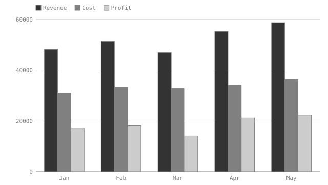

Author
Write Net = Price * Qty instead of 50.00. The document
computes itself and still renders on GitHub, in previews, through pandoc — no
plugin.
the numbers in your Markdown, checked on every commit
…and catches AI arithmetic hallucinations, too! …and gives you spreadsheet mechanics, too! …fat fingers no more! …so stale values are impossible!
Write Net = Price * Qty instead of 50.00. The document
computes itself and still renders on GitHub, in previews, through pandoc — no
plugin.
Already have a table full of numbers? visimark infer derives the rules that
reproduce them, so you don't retype anything.
visimark check fails CI the moment a number and its formula disagree.
This is the one that matters — Author and Adopt exist to get you
here. VisiMark catches:
Not just a spreadsheet for Markdown — a build tool, an agent harness, a human error verifier, executable documentation and a safety net for stale artifacts.
CI needs to split a test suite across parallel runners so no single shard drags. Most
teams keep that split in a hand-maintained matrix that quietly drifts from the suite's
real shape. Here the sharding policy is the document, and visimark eval is
the thing CI itself reads to build the matrix.
Find out: why a build tool reads a Markdown file
An autonomous coding agent needs a spending cap it can't talk itself out of. Here the cap and the running spend live in a document a harness checks before the next tool call is allowed to fire — the enforcement point sits outside the agent entirely.
A structural calc gets retyped by hand between engineer, permit office and contractor, and every retyping risks a transposed digit — a failure mode with no compile error. This calculation sheet is built to catch exactly that before anyone builds the deck.
Find out: why this is a verifier, not a calculator
Pricing pages, sales decks and billing configs usually restate the same numbers independently until one of them lags behind a tier change. Here the pricing policy's prose and the exact values the billing engine reads at deploy time are the same file.
Find out: why this is knowledge extraction, not documentation-as-code
A funnel chart pasted into a quarterly slide looks current forever, even after the
numbers behind it move. Here the chart is a generated artifact of the document, and
check refuses to let it disagree with the table beside it.
No install required — play with VisiMark right now.
See VisiMark in action, from the first formula to a red build.
VisiMark turns numbers in Markdown from claims into auditable derivations. Ten ways that shows up, from the first formula to a red build.
Keep the document. Add the mechanics.
VisiMark brings formulas, derived values, totals and verification to Markdown —
without turning your document into a proprietary spreadsheet. The table below is
ordinary GFM. The vmark block next to it is the only new thing: one rule
per column, one aggregate, one anchor. Source on the left, what a reader actually sees
on the right.
Still Markdown. Now verifiable.
Someone changes an input. The document still renders normally. The numbers still look plausible. But the calculation is now wrong. VisiMark can tell you.
Below is a real invoice, live: someone raised on-call hours from 12 to 20 and nothing else changed. Read it the way a reviewer would.
Nothing looks wrong. That's the point — on-call hours went from 12 to 20, and every figure derived from it stayed behind.
$ visimark check invoice.md invoice.md STALE lines.Net · On-call support 3120.00 ≠ 5200.00 Qty * Rate STALE lines.VAT · On-call support 717.60 ≠ 1196.00 Net * vat STALE lines.Gross · On-call support 3837.60 ≠ 6396.00 Net + VAT STALE lines.net_total 23300.00 ≠ 25380.00 SUM(Net) STALE lines.vat_total 5359.00 ≠ 5837.40 SUM(VAT) STALE lines.gross_total 28659.00 ≠ 31217.40 SUM(Gross) … 15 more, from an unparseable date and a broken cross-sheet reference elsewhere in the file 26 problems (21 stale, 5 errors) $ echo $? 1
Trimmed — the full run is docs/example-invoice-drift.md.
It rendered clean. It was not correct.
Don't rewrite an existing table by hand. VisiMark can inspect the values and infer rules that explain how they were calculated.
quote.md below is ordinary Markdown — someone typed every cell by
hand, and the numbers agree only because they were careful. Run infer and
watch the rule appear.
$ visimark infer quote.md column rules Revenue = Seats * Fee 4/4 rows scalars matching figures in prose 27600.00 = SUM(Revenue) revenue_total 1 rule, 1 scalar found — write them? [Y/n]
The full report also lists near-misses and detected constants: docs/example-quote-plain.md.
When the numbers admit more than one explanation, infer says so instead of
guessing: a rule that fits every row but one is reported as a near-miss and never
written, even with --write.
Change an input once. VisiMark follows its dependencies and recalculates the values that depend on it.
| Item | Qty | Rate | Net | VAT | Gross | |-----------------|----:|-------:|--------:|--------:|--------:| | On-call support | 12 | 260.00 | 3120.00 | 717.60 | 3837.60 | ```vmark #lines Net = Qty * Rate VAT = Net * vat Gross = Net + VAT ``` Due on delivery: **3837.60**<!--vmark=schedule.Amount--> PLN. ```vmark #schedule Amount = SUM(lines.Gross) ```
| Item | Qty | Rate | Net | VAT | Gross | |-----------------|----:|-------:|--------:|--------:|--------:| | On-call support | 20 | 260.00 | 5200.00 | 1196.00 | 6396.00 | ```vmark #lines Net = Qty * Rate VAT = Net * vat Gross = Net + VAT ``` Due on delivery: **6396.00**<!--vmark=schedule.Amount--> PLN. ```vmark #schedule Amount = SUM(lines.Gross) ```
graph TD
Qty["On-call support · Qty"] --> Net
Net --> VAT
Net --> Gross
Gross --> Amount["schedule.Amount"]
One source of truth. Predictable downstream changes.
Calculated values live in your Markdown. Changes remain normal text changes. Review them in Git, in a pull request, or in a code review.
fmt locates each value it owns by byte position and splices the original
text — it never round-trips through a Markdown printer, which would reformat every
paragraph and list in the file. Hypothetically, if it did:
--- a/invoice.md
+++ b/invoice.md
@@ -1,136 +1,136 @@
-Invoice 2026/09/014
+Invoice 2026/09/014
… four hundred more lines of re-wrapped paragraphs, renormalised emphasis
markers and realigned table columns, for one changed cell.
What fmt actually produces for the same change:
- Gross total: 28,659.00 + Gross total: 31,217.40
The document stays a first-class version-controlled artifact.
A clean document is not necessarily a verified document. VisiMark also checks whether your tables are actually covered by rules.
A checker that only compares numbers to rules would call a table with no rules
clean — the most misleading answer it could give. check
reports it as a problem in its own right:
$ visimark check quote.md quote.md COVERAGE a table with no `vmark` rules — nothing in this document is checked run `visimark infer` to derive them, or mark it <!--vmark:no-formulas--> 1 problem (0 stale, 1 error)
graph LR
U[UNVERIFIED] --> I["infer automatically"] --> V["VERIFIED ✓"]
U --> H["write rules by hand"] --> V
class V verified
classDef verified fill:#eafaf0,stroke:#1a7f37,color:#1a7f37,font-weight:bold;
$ visimark check quote.md ✓ quote.md — every value agrees $ echo $? 0
The checkmark is a claim: these numbers were actually checked.
Don't just check the document. Check every change. Every pull request can verify that calculated values still agree with their rules before the change merges.
graph TD
PR["Pull request #184 — raise on-call hours"] --> Check["visimark check"]
Check --> Pass[PASS]
Check --> Fail[FAIL]
Pass --> Merge
Fail --> Fix["fmt, then re-run"]
class Pass pass
class Fail fail
classDef pass fill:#eafaf0,stroke:#1a7f37,color:#1a7f37,font-weight:bold;
classDef fail fill:#fdecea,stroke:#c0392b,color:#c0392b,font-weight:bold;
- uses: michal-niedzwiedzki/visimark@v0.1.0
with:
files: "docs/**/*.md"
✓ visimark check
0 problems
Process completed with exit code 0
Every calculated value still agrees with its rule. The change merges.
✗ visimark check
26 problems (21 stale, 5 errors)
Process completed with exit code 1
The on-call-hours edit left 21 values behind. Run fmt, push, re-run.
Any document under the glob with a table and no rules is a failure too — there is
no strictness dial to find. The one way out is
<!--vmark:no-formulas-->, written in the file, so the decision is
about the document and not the CI run.
GitHub, VS Code, pandoc
VisiMark adds computational semantics without taking Markdown away from the tools that already understand it. Readers don't need VisiMark to read the document — verified against GitHub, VS Code, pandoc and four other renderers.
✓ pass — anchors stripped from output
✓ pass — anchors pass through as a comment
✓ pass — anchors pass through as a comment
Dependency graph, evaluated in order
VisiMark turns formulas into a dependency graph, evaluates it in order, and reports invalid relationships instead of silently producing a result.
```vmark vat = 23% ``` | Item | Qty | Rate | Net | VAT | Gross | |---------|----:|-------:|--------:|--------:|--------:| | On-call | 20 | 260.00 | 5200.00 | 1196.00 | 6396.00 | ```vmark #lines Net = Qty * Rate VAT = Net * vat Gross = Net + VAT ```
graph LR
Rate --> Net
Qty --> Net
Net --> VAT --> Gross
CYCLE late_fees.base → late_fees.fee → late_fees.total → late_fees.base
A real cycle, from docs/example-invoice-drift.md — reported with the full path, not a bare “circular reference”.
Eight ways in, one engine
More to explore — each is one command, documented in full in the CLI reference.
checkVerify calculations and fail on the first disagreement.
fmtUpdate stale calculated values while preserving the rest of the document.
inferDiscover formulas from existing tables.
evalInspect calculated values programmatically, including as JSON.
explainUnderstand a sheet's inputs, rules and evaluation order.
chartGenerate a verified SVG from a sheet's own columns.
assert states an invariant a stray formula could still satisfy.
The same engine, as live diagnostics, quick fixes and hover.
Two documents from the repository, beside what they render to — scrolling in lockstep, not screenshots.
A picture derived from the data, and proven to match it
A chart statement names columns the sheet already has.
fmt draws the SVG and check proves the bytes on disk are still
what the current table renders to — so the picture cannot quietly drift away from
the numbers underneath it.
docs/example-charts.md as committed, rendered client-side with
marked.
The document is the source; tooling reads it directly
An operating budget where the worker-node count is derived rather than typed. The prose
is the specification, the tables are its inputs, and eval hands the results
to whatever needs them next — documentation to computation to machine-readable
output, not code to generated documentation.
The same document, read by the CLI instead of a browser:
$ visimark eval infrastructure-budget.md --json
{
"budget": {
"WorkerBudget": 12000,
"WorkerBudgetPercentage": 50
},
"kubernetes": {
"MaxNodes": 48,
"TotalCPU": 384,
"UsableCPU": 307,
"TotalMemory": 1536,
"UsableMemory": 1228
}
}
Two ways to bring VisiMark into a project.
Install the visimark command globally, or run it without installing at all
— either way it runs under whichever of Bun or Node is on your PATH.
$ npm i -g visimark # or $ bun add -g visimark # or, with no install at all $ npx visimark check invoice.md
VisiMark ships an agent skill — copy it in, and an agent picks up authoring and verification discipline automatically, no prompting required.
$ cp -r skills/visimark ~/.claude/skills/visimark
Its central warning is worth stating here too: a green check is evidence of agreement, not of derivation. Change an input and confirm the checker starts complaining before trusting a document is wired up.
See skills/visimark/SKILL.md for the full skill.
Four more places VisiMark's mechanics show up.
A chart statement turns a sheet's own columns into an SVG.
fmt draws it; check proves the bytes on disk still match the
data — the same guarantee as any other computed value, just shaped like a
picture.

A comment anchor binds a printed number to a name, so a sentence stays plain prose while the value stays machine-checkable:
Invoice total: **28659.00**<!--vmark=lines.gross_total-->
The HTML comment is invisible in every renderer that permits raw HTML — GitHub, VS Code, pandoc — so a reader just sees the bold number.
Every number agreeing with its own formula is not the same as the document being
right. An assert states the invariant the numbers together must satisfy
— it binds nothing and fmt never touches it:
```vmark #recon scheduled = SUM(schedule.Amount) variance = lines.gross_total - scheduled assert variance == 0 ```
Without it, a payment schedule that stopped summing to the invoice total would leave a
non-zero variance and still pass. With it, check shows the
expression and the values that broke it:
ASSERT #recon variance == 0 -318.00 == 0 is false
One language server wraps the same engine, so the editor disagrees with you as you
type rather than at commit time — live diagnostics, quick fixes, inlay hints,
CodeLens and hover, with fmt behind the editor's own format-on-save.
STALE lines.Net · On-call support 3120.00 ≠ 5200.00 Qty * Rate Quick fix: update the value to 5200.00
Not on a marketplace yet — build and install it from a clone with
bun run vscode-install, then reload the window.
Numbers should be derived, not trusted.
VisiMark makes calculations explicit, changes reviewable, and numerical correctness enforceable — while keeping the document as plain Markdown.